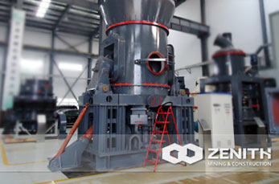

LM Vertical Grinding Mill
LM series vertical grinding mill is widely absorbs the international famous company based on advanced technology, combined with 30 milling equipment production experience for many years, our company designed and developed a set of crushing, grinding, choose powder, drying, conveying and other five major functions in an integrated large grinding equipment, a process focus, cover an area of an area small, less investment, high efficiency, energy saving, environmental protection and so on a number of characteristics.
- reliable operation.Installation of automatic control system, which can realize remote control, simple operation, stick and mill lining board installation to prevent direct contact with the device, to avoid damaging shock and violent vibration.
- high performance.Material inside the mill stay time is short, easy to detect and control the product particle size and chemical composition, reduce duplication of grinding, more stable product quality, by adjusting the hot blast temperature, can meet the requirements of different humidity material.
- the investment cost is low.The mill roller on direct rolling mill grinding materials, energy consumption by 30% to 40% lower than the ball mill, and the roller and plate made of high-quality material wear-resisting ability is stronger.
The working principle of LM Vertical Grinding Mill
Main motor by rotational speed reducer drive a millstone, hot air from the air inlet into the roller mill in the body at the same time, the material from the feed opening into the mill and under the action of centrifugal force, central to the edge of the uniform moving from a millstone, passes through the mill roller grinding area, by the roller of roller compaction, large materials directly crushed, fine grained material by extrusion forming on the intergranular crush on bed.Shattered as it continues to move mill edge material, until being taken away by the wind ring in strong turbulence, and larger particles material again fell to the mill to continue to crush, flow of material through the upper separator in under the action of rotor blade, coarse particle back grinding mill, qualified fine powder with airflow mill, the system sets out side by side is the finished product powder gun collection.Mix materials of iron and other debris along with the material movement to the edge of mill, due to its own weight, inferior vena big fell to grinding machine was installed in the mill at the bottom of the scraping plate into the slag discharge port discharge closed (commonly known as scumming).
The advantage of LM Vertical Grinding Mill
- low investment cost, the machine set crushing, drying, grinding, sorting conveyor at an organic whole, the system is simple, layout is compact, cover an area of an area small, and can be open to decorate, a lot of lower investment cost.
- high grinding efficiency, the grinding roll on direct rolling mill grinding materials, low energy consumption, and the ball mill system compares and economizes 30% of energy consumption - 40%.
- drying ability: this machine USES the hot gas conveying material, therefore, in the grinding machine can dry grinding water up to 15% of the material, saves raw material drying system, and by adjusting the hot blast temperature, meet different humidity material requirements.
- product quality is stable, because the material stay in the grinding time is short, easy to detect and control the product particle size and chemical composition, reduce duplication of grinding, stable product quality, is used for grinding white or transparent materials, high whiteness and clarity of the product.